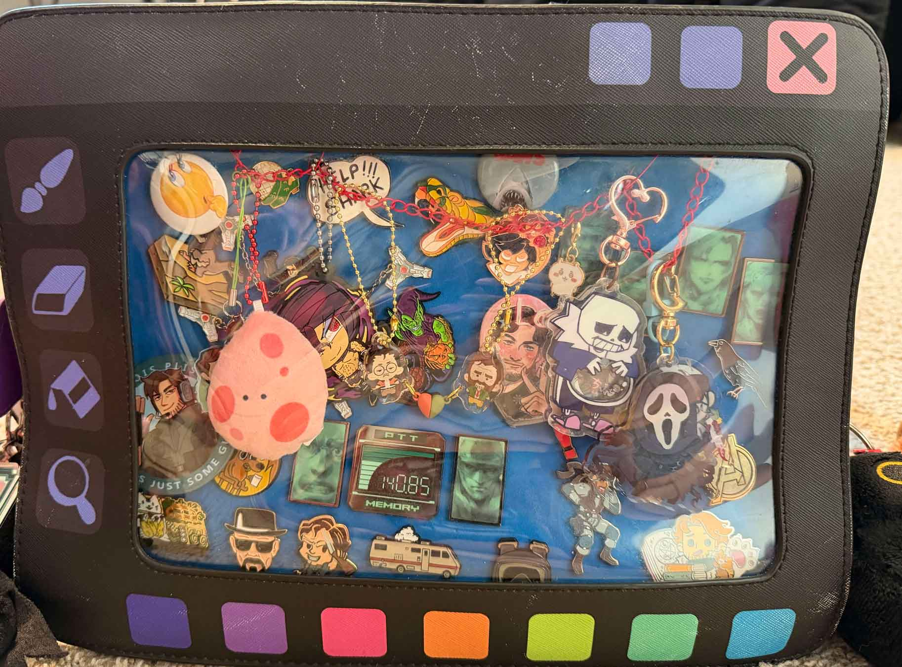

Sabi showed me her images made with a website called Bitsy. I was most interested in the cohesive pixel art style and palette that ran across the images. The palette was very pastel and soft with a cute 8-bit look across the image set. They are cohesive, with one image showing a consellation and another showing a starry sky with a planet.
When looking at the image set, I do get curious on how they all connect, especially since they work with the vast environments of space and water respectfully. I really want to know what kind of narrative she is trying to convey just from these creations alone. Alongside those feelings, I get feelings of awe and wonder with how playful and bright it is. Sabi's images overall are intriguing in the sense of its style and what she showed me upfront.

In terms of the image I am excited to work with, I will be working with a close up image of my pin bag. This bag has been a significant part of my life as I collected pins, keychains, and trinkets from a variety of places. For example, I got the pink egg when my friend from Colorado visited me in Davis. This image relates to the topic of my collection because this is a collection of things I like to carry around me.
With my collection, it tells a story about what I am passionate about, the places I have been, and the people that mean a lot to me. I do want to retake the image so that the bag appears more flatter with reduced glare for clarity. There may be a technique I'll use where I take a picture of my collection without the window and make a mockup of the visuals around the bag to layer on top.